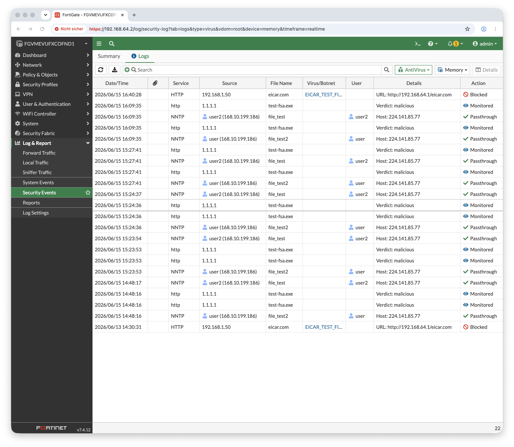

Aufbau
Der Client hängt hinter der FortiGate; sein HTTP-Verkehr läuft durch die LAN→WAN-Policy. Damit die AV-Engine den Inhalt sieht, muss es Klartext-HTTP sein (HTTPS bräuchte SSL-Inspektion). Die EICAR-Datei wird daher von einem kleinen HTTP-Server auf dem Lab-Host bereitgestellt.
Warum EICAR: die EICAR-Datei ist kein echter Virus, sondern ein 68-Byte-Textmuster, das per Konvention von jeder AV-Engine als Treffer gemeldet wird. Sie steckt in der mitgelieferten AV-Datenbank — funktioniert also auch auf einer unlizenzierten Lab-VM, deterministisch.
1 — EICAR über HTTP bereitstellen
2 — AntiVirus an die Policy
Das eingebaute Profil default reicht — kein neues Objekt nötig (und schont das
Eval-Lizenz-Limit). In der GUI: Policy & Objects → Firewall Policy → LAN-to-WAN → Security Profiles
→ AntiVirus = default. Per CLI:
GUI statt flakiger CLI: Die serielle FortiGate-Konsole war bei längeren Sessions unzuverlässig — die Profilbindung per GUI vorzunehmen war robuster. Eine gute Erinnerung: das richtige Werkzeug für den Moment wählen.
3 — Der Test vom Client
Der HTTP-Header (200) beginnt noch, doch sobald die AV-Engine im Body das EICAR-Muster erkennt, wird die Verbindung zurückgesetzt — der Client erhält 0 Byte. Die saubere Datei passiert unverändert. Klassisches Verhalten der flow-basierten AV.
4 — Der Beweis im AV-Log
Log & Report → Security Events → AntiVirus:
| FELD | WERT |
|---|---|
| Virus/Threat | EICAR_TEST_FILE |
| Action | blocked |
| Source | 192.0.2.50 (Client) |
| Service | HTTP |
| Datei | eicar.com |

Abb. 1 — FortiGate AV Security Events Log: EICAR_TEST_FILE / Action blocked — Flow-basierter AV-Scan erkennt und blockiert den Download mid-transfer
Ergebnis
| DOWNLOAD | ERGEBNIS |
|---|---|
| clean.txt | 200 — durchgelassen |
| eicar.com | geblockt — 0 Byte, Connection Reset |
Erkenntnisse (NSE4)
Der 68-Byte-Standard liegt in der mitgelieferten AV-DB — testet AV ohne echte Malware und ohne FortiGuard-Abo.
Flow-AV sieht nur unverschlüsselten Inhalt. Für HTTPS bräuchte es SSL-Deep-Inspection (eigener Test).
Flow-basierte AV setzt bei einem Treffer die Verbindung zurück → Client bekommt 0 Byte (curl exit 56).
Das default-AV-Profil reicht und schont das Eval-Limit für eigene Objekte.
Teil der Lab-Serie auf GitHub: FortiGate-Setup, Client-Anbindung, IPS- und AV-Test sind dokumentiert. → fortigate-vm-lab-apple-silicon